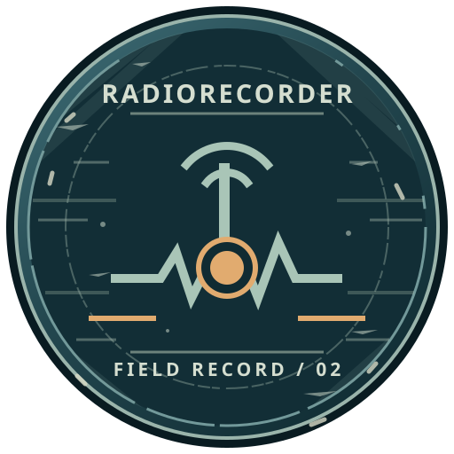

01 / MŰSZERVEKTOR · SVG
Terepi műszer
Finom skála, rendezett hullámforma, pontos jelölések. Egy működő mérőeszköz karaktere.
48 PX / IKONMÉRET
SVG LETÖLTÉSE ↗Kerek logótervek a Clear Sky színvilágának hangulatában, saját rajzolattal.
Finom skála, rendezett hullámforma, pontos jelölések. Egy működő mérőeszköz karaktere.

Karcos fém, töredezett perem és hangsúlyos rögzítésjelző. Egy sokat használt terepi eszköz jelvénye.